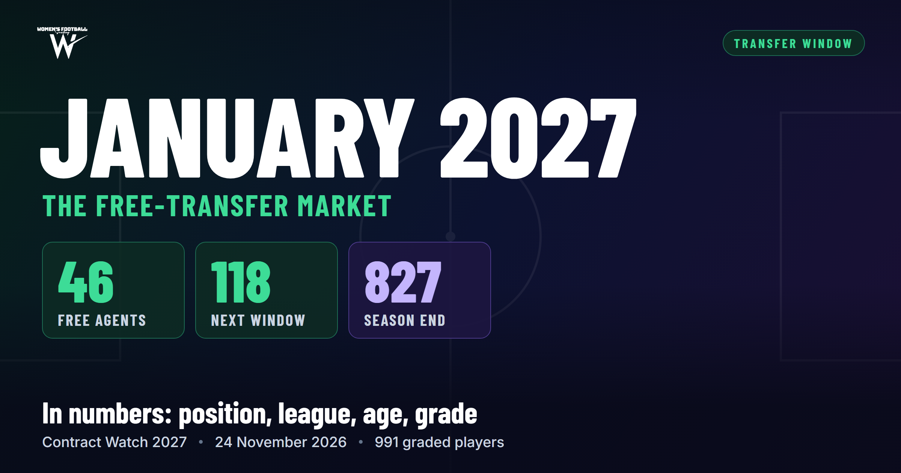

January 2027: The Free-Transfer Market in Numbers
The winter window opens on 4 January. Of the players we have graded, 991 are either without a club today or out of contract by the end of the season. Who are they? The names are on the site; here we X-ray the market: position, league, age, grade and passport.

The winter transfer window is 41 days away. In Türkiye it opens on 4 January 2027 and closes on 26 March 2027, and in Europe's biggest leagues it also opens in the first days of January.
So who is out there? Who can you sign without a fee, where is the choice wide and where is it thin? We pulled the numbers from the site's Contract Watch 2027 list, which is recalculated every day. The names stay on the list; here we look at the big picture.
The size of the market
Players without a club today, those who become free in January, and those running down to the end of the season.
Our scouting pool holds 1,428 players with an overall scout grade. Of those, 991, roughly 69%, fall into one of three groups you can sign without paying a fee.
First, the free agents: 46 players without a club today. Second, the 118 players whose contracts end before Türkiye's registration period closes. Third and largest, 827 players whose contracts run out by 4 July 2027: when the window opens, they are into their last six months. The site labels them "free at season end".
Add the first two groups together and you get 164. That is how many players you can sign for free in January.
Contract Watch 2027: 24 November 2026
These numbers are seen from a club in Türkiye, because the cut-off dates follow the buying country's registration period. Seen from England, the three numbers come out the same today.
Position by position
Where is the choice wide, and where is it thin?
We grouped the 863 players with a known position under the site's six headings: goalkeeper, centre-back, full-back, midfield, winger and striker.
Players available for free, by position group
In January the widest choice is among full-backs: 31 players. The thinnest is among wingers: 17. Wait for the end of the season and the picture changes, with midfielders pulling well clear (193).
Looking for a goalkeeper? January offers 20: 3 free agents and 17 whose contracts end in the window.
Raise the bar to BC or better and the January candidates with a known position drop to 46: 9 goalkeepers, 6 centre-backs, 9 full-backs, 10 midfielders, 5 wingers and 7 strikers.
Where they play
Where the players come from, and where January's supply really lies.
The 945 players under contract play in the leagues of 69 different countries. Türkiye has the biggest slice: 349 players, roughly 35% of the list. The reason is simple: Türkiye is the country our pool covers most widely. Of the 385 graded players in its leagues, 349 have contracts ending by 4 July 2027.
After Türkiye come England (78), France (36) and the United States (32).
By country of current league: top 8 and the rest
| CountryCountry | Next windowWindow | Season endSeason end | TotalTotal | Graded in poolPool |
|---|---|---|---|---|
| Türkiye | 8 | 341 | 349 | 385 |
| England | 6 | 72 | 78 | 159 |
| France | 0 | 36 | 36 | 71 |
| United States | 18 | 14 | 32 | 105 |
| Germany | 0 | 27 | 27 | 80 |
| Spain | 0 | 27 | 27 | 48 |
| China | 19 | 7 | 26 | 27 |
| Italy | 0 | 22 | 22 | 64 |
| 61 other countries | 65 | 278 | 343 | 428 |
| League not recorded | 2 | 3 | 5 | — |
| Under contract, total | 118 | 827 | 945 | — |
But the players knocking on the door in January come from elsewhere. The 118 whose contracts end in the next window play mostly in these countries: China (19), the United States (18), South Korea (14), Sweden (10) and Iceland (10). Only 8 of them play in Türkiye.
Passports count too: 245 of the 991 players hold EU, EEA or Swiss citizenship. Among those available in January, the figure is 31.
Age and grade
January brings a larger share of players aged 29 and over; for young players, the real market is the summer.
Of the 164 players available in January, 65 are 29 or older, roughly 40%. In the season-end group the share is 30%. Among free agents it is even clearer: 21 of the 46 are 29 or older, and none is under 21.
Looking for youth? Check the calendar: of the 136 players under 21, 127 are in the season-end group.
Age band and overall scout grade
Age band
Overall scout grade (band)
On grades, the most common band is CC with 310 players. The 236 players graded BC or better make up roughly 24% of the list; 47 of them are available in January. The top two grades, AA and AB, hold 31 players, 7 of them in the January group.
Our scale starts at A+ and runs down through AA, AB, BB, BC, CC, CD, DD, DE and EE; nobody on this list is graded A+ or EE.
The calendar
When the windows open, and why the numbers pile up in January.
The January pile-up is about the calendar. Of the 118 contracts ending in the next window, 116 expire in December 2026.
In leagues played over the calendar year, such as Sweden, Norway, Iceland, Finland, the United States, China and South Korea, the season closes before the year is out and contracts mostly end in December. Europe's winter windows open a few days later, at the start of January. Sure enough, 90 of those 118 players play in the 12 countries whose season ends in 2026.
Winter 2027 registration periods: 12 countries
In 10 of the 12 countries in the chart the window is open by 4 January; the late starters are Switzerland (15 January) and Poland (1 February). In 9 countries it closes in the first week of February. Türkiye is in no hurry: its window stays open until 26 March, the latest closing date in the chart.
The summer shows the same pile-up: of the 827 contracts in the season-end group, 825 expire in June 2027.
Text: WFS Analysis Desk. Figures from the site's Contract Watch 2027 list (24 November 2026); the list is recalculated daily. Contract dates are compiled from SoccerDonna and club sources; verify before acting. Registration periods from the site's transfer calendar (13 November 2026).
More files